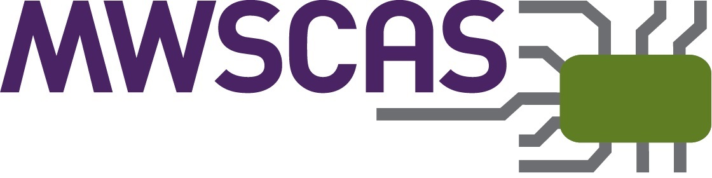

The 69th IEEE International Midwest Symposium on Circuits and Systems
Cincinnati, Ohio, USA
August 9–12, 2026
Established in 1955, MWSCAS has served the circuits and systems community for seven decades and has been held annually since 1963.